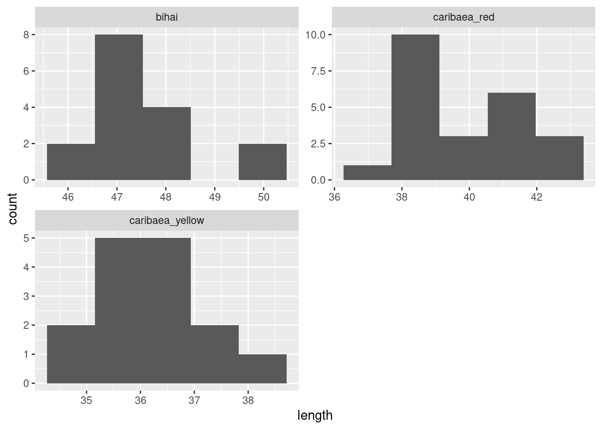

Chapter 10 Mood median test
10.1 Sugar in breakfast cereals
The data for this question are in http://ritsokiguess.site/datafiles/cereal-sugar.txt. The story here is whether breakfast cereals marketed to children have a lot of sugar in them; in particular, whether they have more sugar on average than cereals marketed to adults.
Read in the data (to R) and display the data set. Do you have a variable that distinguishes the children’s cereals from the adults’ cereals, and another that contains the amount of sugar?
Calculate the mean sugar content for each group of cereals (the adults’ ones and the children’s ones). Do they look similar or different?
Make side-by-side boxplots of the sugar contents of the two types of cereal. What do you see that is out of the ordinary?
Explain briefly why you would not trust a two-sample \(t\)-test with these data. (That is, say what the problem is, and why it’s a problem.)
Run a suitable test to see whether the “typical” amount of sugar differs between adult’s and children’s cereals. Justify the test that you run. (You can use the version of your test that lives in a package, if that is easier for you.) What do you conclude, in the context of the data?
10.2 Fear of math
Two new short courses have been proposed for helping students who suffer from severe math phobia. The courses are labelled A and B. Ten students were randomly allocated to one of these two courses, and each student’s score on a math phobia test was recorded after they completed their course. The math phobia test produces whole-number scores between 0 and 10, with a higher score indicating a greater fear of mathematics. The data can be found in link. We start with R for this question.
Read in the data and check, however you like, that you have 10 observations, 5 from each course.
Do a two-sample \(t\)-test to assess whether there is a difference in mean phobia scores after the students have taken the two courses. What do you conclude? (You have no 1 reason to suppose that a particular one of the tests will produce a higher mean than the other, so do a two-sided test.)
Draw boxplots of the math phobia scores for each group (one line of code). What is the most striking thing that you notice?
Explain briefly why a \(t\)-test would not be good for these data. (There are two things that you need to say.)
Run a suitable test to compare the “typical” scores for the two courses. (You can use the version from a package rather than building your own.) What do you conclude?
10.3 Medical instructions
Do people understand medical instructions better at certain times of the day? In a study, students in a grade 12 class are randomly divided into two groups, A and B. All students see a video describing how to use an infant forehead thermometer. The students in Group A see the video at 8:30 am, while the students in Group B see the same video at 3:00 pm (on the same day). The next day, all the students are given a test on the material in the video (graded out of 100). The observed scores are in link (values separated by spaces).
Read the data into R and display the (first ten) values.
Obtain a suitable plot that will enable you to assess the assumptions for a two-sample \(t\)-test.
Why might you have doubts about using a two-sample \(t\)-test here?
Run Mood’s median test as in class (without using
smmr). What do you conclude, in the context of the data? What recommendation would you make about the time of day to see the video? (You might get a warning about “chisquared approximation being incorrect”, which you can ignore here.)Run Mood’s median test on these data using my
smmrpackage, and verify that you get the same answer.
10.4 Handspans revisited
Take your right hand, and stretch the fingers out as far as you can. The distance between the tip of your thumb and the tip of your little (pinky) finger is your handspan. The students in a Statistics class at Penn State measured their handspans and also whether they identified as male or female. The data are at http://ritsokiguess.site/datafiles/handspan.txt, with handspans measured in inches. We want to see whether male students have a larger mean handspan than female students.
Read in and display (some of) the data.
Make a suitable (facetted) normal quantile plot of the data. (Bear in mind what is supposed to have a normal distribution.)
Discuss briefly whether you might prefer to use Mood’s median test to compare the handspans of the male and female students, compared to a two-sample \(t\)-test.
Run Mood’s median test. What do you conclude from the test, in the context of the data?
My solutions follow:
10.5 Sugar in breakfast cereals
The data for this question are in http://ritsokiguess.site/datafiles/cereal-sugar.txt. The story here is whether breakfast cereals marketed to children have a lot of sugar in them; in particular, whether they have more sugar on average than cereals marketed to adults.
- Read in the data (to R) and display the data set. Do you have a variable that distinguishes the children’s cereals from the adults’ cereals, and another that contains the amount of sugar?
Solution
##
## ── Column specification ──────────────────────────────────────────────────────────────────────────────────────────────────────────────────────────────────────────────────────────────────────
## cols(
## who = col_character(),
## sugar = col_double()
## )## # A tibble: 40 x 2
## who sugar
## <chr> <dbl>
## 1 children 40.3
## 2 children 55
## 3 children 45.7
## 4 children 43.3
## 5 children 50.3
## 6 children 45.9
## 7 children 53.5
## 8 children 43
## 9 children 44.2
## 10 children 44
## # … with 30 more rowsThe variable who is a categorical variable saying who the
cereal is intended for, and the variable sugar says how much
sugar each cereal has.
\(\blacksquare\)
- Calculate the mean sugar content for each group of cereals (the adults’ ones and the children’s ones). Do they look similar or different?
Solution
group_by and summarize:
## # A tibble: 2 x 2
## who sugar_mean
## <chr> <dbl>
## 1 adults 10.9
## 2 children 46.6These means look very different, though it would be better to look at a boxplot (coming up in a moment).
\(\blacksquare\)
- Make side-by-side boxplots of the sugar contents of the two types of cereal. What do you see that is out of the ordinary?
Solution
The usual:

I see outliers: two high ones on the adults’ cereals, and one high and one low on the children’s cereals.
My thought above about the means being very different is definitely supported by the medians being very different on the boxplots. We should have no trouble declaring that the “typical” amounts of sugar in the adults’ and children’s cereals are different.
\(\blacksquare\)
- Explain briefly why you would not trust a two-sample \(t\)-test with these data. (That is, say what the problem is, and why it’s a problem.)
Solution
The problem is the outliers (which is rather a giveaway), but the reason it’s a problem is that the two-sample \(t\)-test assumes (approximately) normal data, and a normal distribution doesn’t have outliers. Not only do you need to note the outliers, but you also need to say why the outliers cause a problem in this case. Anything less than that is not a complete answer.
\(\blacksquare\)
- Run a suitable test to see whether the “typical” amount of sugar differs between adult’s and children’s cereals. Justify the test that you run. (You can use the version of your test that lives in a package, if that is easier for you.) What do you conclude, in the context of the data?
Solution
Having ruled out the two-sample \(t\)-test, we are left with Mood’s
median test. I didn’t need you to build it yourself, so you can
use package smmr to run it with:
## $table
## above
## group above below
## adults 2 19
## children 18 1
##
## $test
## what value
## 1 statistic 2.897243e+01
## 2 df 1.000000e+00
## 3 P-value 7.341573e-08We conclude that there is a difference between the median amounts of sugar between the two groups of cereals, the P-value of 0.00000007 being extremely small.
Why did it come out so small? Because the amount of sugar was smaller than the overall median for almost all the adult cereals, and larger than the overall median for almost all the children’s ones. That is, the children’s cereals really do have more sugar.
Mood’s median test doesn’t come with a confidence interval (for the difference in population medians), because whether or not a certain difference in medians is rejected depends on what those medians actually are, and the idea of the duality of the test and CI doesn’t carry over as we would like.
My daughter likes chocolate Cheerios, but she also likes Shredded Wheat and Bran Flakes. Go figure. (Her current favourite is Raisin Bran, even though she doesn’t like raisins by themselves.)
Mood’s median test is the test we should trust, but you might be curious about how the \(t\)-test stacks up here:
##
## Welch Two Sample t-test
##
## data: sugar by who
## t = -11.002, df = 37.968, p-value = 2.278e-13
## alternative hypothesis: true difference in means is not equal to 0
## 95 percent confidence interval:
## -42.28180 -29.13925
## sample estimates:
## mean in group adults mean in group children
## 10.90000 46.61053The P-value is even smaller, and we have the advantage of getting a confidence interval for the difference in means: from about 30 to about 40 units less sugar in the adult cereals. Whatever the units were.
\(\blacksquare\)
10.6 Fear of math
Two new short courses have been proposed for helping students who suffer from severe math phobia. The courses are labelled A and B. Ten students were randomly allocated to one of these two courses, and each student’s score on a math phobia test was recorded after they completed their course. The math phobia test produces whole-number scores between 0 and 10, with a higher score indicating a greater fear of mathematics. The data can be found in link. We start with R for this question.
- Read in the data and check, however you like, that you have 10 observations, 5 from each course.
Solution
This doesn’t need much comment:
##
## ── Column specification ──────────────────────────────────────────────────────────────────────────────────────────────────────────────────────────────────────────────────────────────────────
## cols(
## course = col_character(),
## phobia = col_double()
## )## # A tibble: 10 x 2
## course phobia
## <chr> <dbl>
## 1 a 8
## 2 a 7
## 3 a 7
## 4 a 6
## 5 a 6
## 6 b 9
## 7 b 8
## 8 b 7
## 9 b 2
## 10 b 1This will do, counting the a and b. Or, to save
yourself that trouble:
## # A tibble: 2 x 2
## course n
## <chr> <int>
## 1 a 5
## 2 b 5Five each. The story is to get the computer to do the grunt work for you, if you can make it do so. Other ways:
## # A tibble: 2 x 2
## course count
## <chr> <int>
## 1 a 5
## 2 b 5and this:
## course
## a b
## 5 5giving the same answer. Lots of ways.
Extra: there is an experimental design issue here. You might have noticed that each student did only one of the courses. Couldn’t students do both, in a matched-pairs kind of way? Well, it’s a bit like the kids learning to read in that if the first of the courses reduces a student’s anxiety, the second course won’t appear to do much good (even if it actually would have been helpful had the student done that one first). This is the same idea as the kids learning to read: once you’ve learned to read, you’ve learned to read, and learning to read a second way won’t help much. The place where matched pairs scores is when you can “wipe out” the effect of one treatment before a subject gets the other one. We have an example of kids throwing baseballs and softballs that is like that: if you throw one kind of ball, that won’t affect how far you can throw the other kind.
\(\blacksquare\)
- Do a two-sample \(t\)-test to assess whether there is a difference in mean phobia scores after the students have taken the two courses. What do you conclude? (You have no 2 reason to suppose that a particular one of the tests will produce a higher mean than the other, so do a two-sided test.)
Solution
A two-sided test is the default, so there is not much to do here:
##
## Welch Two Sample t-test
##
## data: phobia by course
## t = 0.83666, df = 4.4199, p-value = 0.4456
## alternative hypothesis: true difference in means is not equal to 0
## 95 percent confidence interval:
## -3.076889 5.876889
## sample estimates:
## mean in group a mean in group b
## 6.8 5.4The P-value of 0.4456 is nowhere near less than 0.05, so there is no
evidence at all that the
mean math phobia scores are different between the two courses.
\(\blacksquare\)
- Draw boxplots of the math phobia scores for each group (one line of code). What is the most striking thing that you notice?
Solution

Boxplot a is just weird. The bar across the middle is
actually at the top, and it has no bottom. (Noting something sensible
like this is enough.) Boxplot b is hugely spread
out.3
By way of explanation: the course a scores have a number of
values equal so that the 3rd quartile and the median are the name, and
also that the first quartile and the minimum value are the same:
## # A tibble: 3 x 2
## phobia n
## <dbl> <int>
## 1 6 2
## 2 7 2
## 3 8 1## course phobia
## Length:5 Min. :6.0
## Class :character 1st Qu.:6.0
## Mode :character Median :7.0
## Mean :6.8
## 3rd Qu.:7.0
## Max. :8.0The phobia scores from course A are two 6’s, two 7’s and an 8. The median and third quartile are both 7, and the first quartile is the same as the lowest value, 6.
Technique note: I wanted to do two things with the phobia scores from
course A: count up how many of each score, and show you what the
five-number summary looks like. One pipe won’t do this (the pipe
“branches”), so I saved what I needed to use, before it branched,
into a data frame tmp and then used tmp twice. Pipes
are powerful, but not all-powerful.
\(\blacksquare\)
- Explain briefly why a \(t\)-test would not be good for these data. (There are two things that you need to say.)
Solution
The easiest way to structure this is to ask yourself first what the
\(t\)-test needs, and second whether you have it.
The \(t\)-test assumes (approximately) normal data. The boxplot for
group a doesn’t even look symmetric, and the one for group
b has an oddly asymmetric box. So I think the normality is
in question here, and therefore another test would be
better. (This is perhaps a bit glib of an answer, since there are
only 5 values in each group, and so they can certainly look
non-normal even if they actually are normal, but these values are
all integers, so it is perhaps wise to be cautious.)
We have the machinery to assess the normality for these, in one shot:
ggplot(math, aes(sample = phobia)) +
stat_qq() + stat_qq_line() +
facet_wrap(~course, ncol = 1, scales = "free")
I don’t know what you make of those, but they both look pretty
straight to me (and there are only five observations, so it’s hard to
judge). Course b maybe has a “hole” in it (three large
values and two small ones). Maybe. I dunno. What I would really
be worried about is outliers, and at least we don’t have those.
I mentioned in class that the \(t\)-tests are robust to non-normality. I
ought to have expanded on that a bit: what really makes the \(t\)-test
still behave itself with non-normality is when you have large
samples, that is, when the Central Limit Theorem has had a chance to
take hold. (That’s what drives the normality not really being
necessary in most cases.) But, even with small samples, exact
normality doesn’t matter so much. Here, we have two tiny samples, and
so we have to insist a bit more, but only a bit more, on a
more-or-less normal shape in each group. (It’s kind of a double
jeopardy in that the situation where normality matters most, namely
with small samples, is where it’s the hardest to judge, because
samples of size 5 even from a normal distribution can look very
non-normal.)
But, the biggest threats to the \(t\)-test are big-time skewness and
outliers, and we are not suffering too badly from those.
\(\blacksquare\)
- Run a suitable test to compare the “typical” scores for the two courses. (You can use the version from a package rather than building your own.) What do you conclude?
Solution
This is an invite to use smmr:
## $table
## above
## group above below
## a 1 2
## b 2 2
##
## $test
## what value
## 1 statistic 0.1944444
## 2 df 1.0000000
## 3 P-value 0.6592430We are nowhere near rejecting equal medians; in fact, both courses are very close to 50–50 above and below the overall median.
If you look at the frequency table, you might be confused by something: there were 10 observations, but there are only \(1+2+2+2=7\) in the table. This is because three of the observations were equal to the overall median, and had to be thrown away:
## # A tibble: 1 x 1
## med
## <dbl>
## 1 7## # A tibble: 6 x 2
## phobia n
## <dbl> <int>
## 1 1 1
## 2 2 1
## 3 6 2
## 4 7 3
## 5 8 2
## 6 9 1The overall median was 7. Because the actual data were really discrete (the phobia scores could only be whole numbers), we risked losing a lot of our data when we did this test (and we didn’t have much to begin with). The other thing to say is that with small sample sizes, the frequencies in the table have to be very lopsided for you to have a chance of rejecting the null. Something like this is what you’d need:
x <- c(1, 1, 2, 6, 6, 6, 7, 8, 9, 10)
g <- c(1, 1, 1, 1, 1, 2, 2, 2, 2, 2)
d <- tibble(x, g)
median_test(d, x, g)## $table
## above
## group above below
## 1 0 3
## 2 4 0
##
## $test
## what value
## 1 statistic 7.000000000
## 2 df 1.000000000
## 3 P-value 0.008150972I faked it up so that we had 10 observations, three of which were equal to the overall median. Of the rest, all the small ones were in group 1 and all the large ones were in group 2. This is lopsided enough to reject with, though, because of the small frequencies, there actually was a warning about “chi-squared approximation may be inaccurate.”4
\(\blacksquare\)
10.7 Medical instructions
Do people understand medical instructions better at certain times of the day? In a study, students in a grade 12 class are randomly divided into two groups, A and B. All students see a video describing how to use an infant forehead thermometer. The students in Group A see the video at 8:30 am, while the students in Group B see the same video at 3:00 pm (on the same day). The next day, all the students are given a test on the material in the video (graded out of 100). The observed scores are in link (values separated by spaces).
- Read the data into R and display the (first ten) values.
Solution
Separated by spaces, so read_delim:
##
## ── Column specification ──────────────────────────────────────────────────────────────────────────────────────────────────────────────────────────────────────────────────────────────────────
## cols(
## group = col_character(),
## score = col_double()
## )## # A tibble: 18 x 2
## group score
## <chr> <dbl>
## 1 A 88
## 2 A 89
## 3 A 79
## 4 A 100
## 5 A 98
## 6 A 89
## 7 A 65
## 8 A 94
## 9 A 95
## 10 A 91
## 11 B 87
## 12 B 69
## 13 B 78
## 14 B 79
## 15 B 83
## 16 B 90
## 17 B 85
## 18 B 58\(\blacksquare\)
- Obtain a suitable plot that will enable you to assess the assumptions for a two-sample \(t\)-test.
Solution
We need the values in each group to be approximately normally distributed. Side-by-side boxplots will do it:

or, if you like, separate (facetted) normal quantile plots, which I would do this way:

\(\blacksquare\)
- Why might you have doubts about using a two-sample \(t\)-test here?
Solution
We are looking for non-normality in at least one of the
groups. Here, both groups have an outlier at the low end that
would be expected to pull the mean downward. I don’t think there
is left-skewness here, since there is no particular evidence of
the high-end values being bunched up: the problem in both cases
with normality is at the low end.
One way or another, I’m expecting you to have noticed the outliers.
Extra: last year, when I first drew the normal quantile plots,
there was no stat_qq_line, so you had to imagine where
the line went if you did it this way. Without the line, these
plots look somewhat curved, which would have pointed to
left-skewness, but now we see that the lowest observation is too
low, and maybe the second-lowest one as well, while the other
observations are just fine.
\(\blacksquare\)
- Run Mood’s median test as in class (without using
smmr). What do you conclude, in the context of the data? What recommendation would you make about the time of day to see the video? (You might get a warning about “chisquared approximation being incorrect”, which you can ignore here.)
Solution
The overall median first:
## # A tibble: 1 x 1
## med
## <dbl>
## 1 87.587.5, which is not equal to any of the data values (they are all integers). This will avoid any issues with values-equal-to-median later.
Then, create and save a table of the value by group and above/below median. You can count either above or below (it comes out equivalently either way):
##
## group FALSE TRUE
## A 2 8
## B 7 1Then, chi-squared test for independence (the null) or association of
some kind (the alternative). The correct=F is saying not to
do Yates’s correction, so that it would come out the same if you were
doing it by hand (“observed minus expected, squared, divided by expected”
and all that stuff).
## Warning in chisq.test(tab, correct = F): Chi-squared approximation may be
## incorrect##
## Pearson's Chi-squared test
##
## data: tab
## X-squared = 8.1, df = 1, p-value = 0.004427The P-value is 0.0044, which is (much) smaller than 0.05, and therefore you can reject independence and conclude association: that is, whether a student scores above or below the median depends on which group they are in, or, that the median scores are different for the two groups.
The warning is because the expected frequencies are on the small side (if you have done this kind of problem by hand, you might remember something about “expected frequencies less than 5”. This is that.) Here, the P-value is so small that we can afford to have it be inaccurate by a bit and still not affect the conclusion, so I think we are safe.
As for which group is better, well, the easiest way is to go back to your boxplots and see that the median for group A (8:30 am) is substantially higher than for group B (3:00pm). But you can also see it from your frequency table, if you displayed it:
##
## group FALSE TRUE
## A 2 8
## B 7 1Most of the people in the 8:30 am group scored above the median, and most of the people in the 3:00 pm group scored below the median. So the scores at 8:30 am were better overall.
As I write this, it is just after 3:00 pm and I am about to make myself a pot of tea!
Extra: about that correct=F thing. There was a point of view for a
long time that when you are dealing with a \(2 \times 2\) table, you can
get better P-values by, before squaring “observed minus expected”,
taking 0.5 away from the absolute value of the difference. This is
called Yates’s correction. It is in the same spirit as the
“continuity correction” that you might have encountered in the
normal approximation to the binomial, where in the binomial you have
to have a whole number of successes, but the normal allows fractional
values as well. In about the 1960s, the usefulness of Yates’s
correction was shot down, for general contingency tables. There is,
however, one case where it is useful, and that is the case
where the row totals and column totals are fixed.
What do I mean by that? Well, first let’s look at a case where the totals are not all fixed. Consider a survey in which you want to see whether males and females agree or disagree on some burning issue of the day. You collect random samples of, say, 500 males and 500 females, and you count how many of them say Yes or No to your statement.5 You might get results like this:
Yes No Total
Males 197 303 500
Females 343 157 500
Total 540 460 1000
In this table, the row totals must be 500, because you asked this many males and this many females, and each one must have answered something. The column totals, however, are not fixed: you didn’t know, ahead of time, that 540 people would answer “yes”. That was just the way the data turned out, and if you did another survey with the same design, you’d probably get a different number of people saying “yes”.
For another example, let’s go back to Fisher (yes, that Fisher). A “lady” of his acquaintance claimed to be able, by drinking a cup of tea with milk and sugar in it, whether the milk or the sugar had been added first. Fisher, or, more likely, his housekeeper, prepared 8 cups of tea, 4 with milk first and 4 with sugar first. The lady knew that four of the cups had milk first, and her job was to say which four. The results might have been like this:
Actual
Milk first sugar first Total
Lady Milk first 3 1 4
says sugar first 1 3 4
Total 4 4 8
This time, all of the row totals and all of the column totals must be 4, regardless of what the lady thinks. Even if she thinks 5 of the cups of tea actually had milk first, she is going to pick 4 of them to say that they have milk first, since she knows there are only 4. In this case, all of the row and column totals are fixed at 4, and the right analysis is called Fisher’s Exact Test, based on the hypergeometric distribution. In a \(2\times 2\) table like this one, there is only one “degree of freedom”, since as soon as you specify one of the frequencies, say the number of cups where the lady said milk first and they actually were milk first, you can work out the others. But, leaving that aside, the usual chi-squared analysis is a perfectly good approximation, especially if the frequencies are large, and especially if you use Yates’s correction.
It is clear that Fisher must have been English, since he was able to get a publication out of drinking tea.
How does that apply to Mood’s median test? Well, let’s remind ourselves of the table we had:
##
## group FALSE TRUE
## A 2 8
## B 7 1We know how many students were in each group: 10 in group A and 8 in B. So the row totals are fixed. What about the columns? These are whether each observation was above or below the overall median. There were 18 observations altogether, so there must be 9 above and 9 below.6 So the column totals are fixed as well. All totals fixed, so we should be using Yates’s correction. I didn’t, because I wanted to keep things simple, but I should have done.
R’s chisq.test by default always uses Yates’s
correction, and if you don’t want it, you have to say
correct=F. Which is why I have been doing so all through.
\(\blacksquare\)
- Run Mood’s median test on these data using my
smmrpackage, and verify that you get the same answer.
Solution
Not much to it, since the data is already read in:
## $table
## above
## group above below
## A 8 2
## B 1 7
##
## $test
## what value
## 1 statistic 8.100000000
## 2 df 1.000000000
## 3 P-value 0.004426526Identical, test statistic, degrees of freedom and P-value. The table
of frequencies is also the same, just with columns rearranged. (In
smmr I counted the number of values below the overall median,
whereas in my build-it-yourself I counted the number of
values above.)
\(\blacksquare\)
10.8 Handspans revisited
Take your right hand, and stretch the fingers out as far as you can. The distance between the tip of your thumb and the tip of your little (pinky) finger is your handspan. The students in a Statistics class at Penn State measured their handspans and also whether they identified as male or female. The data are at http://ritsokiguess.site/datafiles/handspan.txt, with handspans measured in inches. We want to see whether male students have a larger mean handspan than female students.
- Read in and display (some of) the data.
Solution
Delimited by a single space, so:
##
## ── Column specification ──────────────────────────────────────────────────────────────────────────────────────────────────────────────────────────────────────────────────────────────────────
## cols(
## sex = col_character(),
## handspan = col_double()
## )## # A tibble: 190 x 2
## sex handspan
## <chr> <dbl>
## 1 M 21.5
## 2 M 22.5
## 3 M 23.5
## 4 F 20
## 5 F 19
## 6 F 20.5
## 7 F 20.5
## 8 F 20.2
## 9 M 23
## 10 M 24.5
## # … with 180 more rows\(\blacksquare\)
- Make a suitable (facetted) normal quantile plot of the data. (Bear in mind what is supposed to have a normal distribution.)
Solution
Here, we need each group to be approximately normal, so make normal quantile plots of handspan, facetted by sex:

\(\blacksquare\)
- Discuss briefly whether you might prefer to use Mood’s median test to compare the handspans of the male and female students, compared to a two-sample \(t\)-test.
Solution
A two-sample \(t\)-test assumes that each of the two samples comes from a (approximately) normal distribution (“the data are normal” is not precise enough). The female values, on the left, definitely have some outliers at the low end (or a long lower tail), so these are definitely not normal. The male values (on the right) are slightly skewed to the left, or there are some mild outliers at the low end, or, if you prefer, these are approximately normal. (You need discussion of each of the males and females, or of why looking at one group is enough.) Because the males are not close enough to normal (or, because neither group is close enough to normal), we would prefer to use Mood’s median test. (Say this.) You do yourself a favour by making it clear that you know that both groups have to be normal enough; if one is good but the other is not, that is not enough.
The other relevant issue is sample size. The best answer discusses that as well, even though you have a lot to think about already. This data set has 190 observations in it, so the samples must be pretty big:
## # A tibble: 2 x 2
## sex n
## <chr> <int>
## 1 F 103
## 2 M 87With these sample sizes, we can expect a lot of help from the central limit theorem. The apparent outliers in the males won’t be a problem, and maybe we could even get away with those outliers in the females.
Extra: you could also think about bootstrapped sampling distributions of the sample mean here. The one we are most concerned about is the females; if it turns out that they are all right, then the males must be all right too, since the plot for them is showing less non-normality (or, without the double negative, is closer to being normal). So let’s do the females:
span %>%
filter(sex == "F") -> females
tibble(sim = 1:1000) %>%
rowwise() %>%
mutate(my_sample = list(sample(females$handspan, replace = TRUE))) %>%
mutate(my_mean = mean(my_sample)) %>%
ggplot(aes(sample = my_mean)) + stat_qq() + stat_qq_line()
My take is that the sampling distribution of the sample mean for the females is normal enough, therefore the one for the males is also normal enough, therefore the two-sample \(t\)-test is actually fine.
The reason that this one is close to normal is different from the other one, though. In the other question, we had milder non-normality but a smaller sample; in this one, the data distribution is less normal, but we had a much larger sample size to compensate.
\(\blacksquare\)
- Run Mood’s median test. What do you conclude from the test, in the context of the data?
Solution
## $table
## above
## group above below
## F 17 82
## M 65 11
##
## $test
## what value
## 1 statistic 8.06725e+01
## 2 df 1.00000e+00
## 3 P-value 2.66404e-19The P-value of \(2.66 \times 10^{-19}\) is extremely small, so we can conclude that males and females have different median handspans. Remember that we are now comparing medians, and that this test is two-sided.
You can stop here, or you can go on and note that most of the males have a handspan bigger than the median, and most of the females have a handspan smaller than the median, so that males have on average a larger handspan. But you have to make the case that males have a larger handspan; you cannot just assert this from the P-value.
A more formal way to do this is to make the same observation as above, then note that this is “on the correct side” (for males to have a larger handspan), and thus that you can halve the P-value, and conclude that males’ handspans are indeed larger in terms of median.
Extra: you are probably expecting a confidence interval now for the difference in medians. I haven’t talked about that in lecture, because the ideas are a bit trickier than they were for the confidence interval for the sign test. The sign test could be used for testing any median, so we could try a bunch of medians and see whether each one was rejected or not. The problem with Mood’s median test is that it only tests that the medians are the same. If you could easily test that the difference in medians was 3, say, you would know whether 3 was inside or outside the confidence interval for the difference in medians.
What were the actual sample medians, anyway?
## # A tibble: 2 x 2
## sex med
## <chr> <dbl>
## 1 F 20
## 2 M 22.5Here’s an idea: if we shift all the female handspans up by 2.5 inches, the medians would be the same:
## # A tibble: 190 x 3
## sex handspan x
## <chr> <dbl> <dbl>
## 1 M 21.5 21.5
## 2 M 22.5 22.5
## 3 M 23.5 23.5
## 4 F 20 22.5
## 5 F 19 21.5
## 6 F 20.5 23
## 7 F 20.5 23
## 8 F 20.2 22.8
## 9 M 23 23
## 10 M 24.5 24.5
## # … with 180 more rowsDataframe d has a new column x that is the handspan plus 2.5 inches for females, and the unchanged handspan for males. So the median of x should be the same for males and females:
## # A tibble: 2 x 2
## sex med_x
## <chr> <dbl>
## 1 F 22.5
## 2 M 22.5and also the medians of x cannot possibly be significantly different:
## $table
## above
## group above below
## F 46 36
## M 41 35
##
## $test
## what value
## 1 statistic 0.07369901
## 2 df 1.00000000
## 3 P-value 0.78602526Quite a lot of the values of x are exactly equal to the overall median (and are discarded), so the P-value is not exactly 1 as you would expect. But it is definitely not significant, and so a difference of 2.5 inches smaller for females is going to be in a confidence interval for the difference in medians.
The strategy now is to try shifting the female handspans by different amounts, run Mood’s median test for each one, and see which shifts are not rejected. These are the ones for which that difference in medians would be in the confidence interval. Before we get to that, though, I want to simplify the procedure we have, so that it is easier to run it lots of times. First, let’s get just the P-value out of the median test:
## [1] 0.7860253That’s the P-value. pluck pulls individual things out of bigger things. The variable I called d.1 has two things in it. The one called table has the numbers of data values above and below the overall median; the one called test has the test statistic and P-value in it. test is a dataframe; inside that is a column called what and a column called value with the number we want in it, and we want the third thing in that (the other two are the chi-squared test statistic and its degrees of freedom). Hence the pluck statement got the right thing.
Let’s think strategy: we want to shift the female handspans by a bunch of different amounts, run the test on each one, and get the P-value each time. When you’re running a big for-each like this, you want the thing you do each time to be as simple as possible. So let’s write a function that takes the shift as input, works out the new x, runs the test, and returns the P-value. We have all the ingredients, so it’s a matter of putting them together:
shift_pval <- function(shift) {
span %>% mutate(x = ifelse(sex == "F", handspan + shift, handspan)) -> d
d.1 <- median_test(d, x, sex)
d.1 %>% pluck("test", "value", 3)
}In the function, the shift is input. The first line computes the handspans shifted by the input amount, whatever it is; the second line runs the median test on the shifted data; the last line pulls out, and returns, the P-value.
I am being a little sloppy here (but R is letting me get away with it): the function is also using a dataframe called span, which is the one we read in from the file earlier. That was not input to the function, so, if you have experience with other programming languages, you might be wondering whether that is “in the scope” of inside the function: that is, whether R will know about it. R does; anything the function needs that is not part of the input, it will take from your workspace. This is, you might imagine, dangerous; if the input to your function is called, say, x, you might easily have an x lying around in your workspace from some other analysis that has nothing to do with the x you want as the input to your function. The safe way to do it, and what I should have done, is to have span be input to my function as well. However, that clutters up the discussion below, so we’ll leave things as I did them here.
Let’s test this on a shift of 2.5 inches, and on the original data (a shift of zero):
## [1] 0.7860253## [1] 2.66404e-19Those are the same P-values we got before, so good.
Now, let’s get a bunch of shifts, say from 0 to 5 in steps of 0.5:
## # A tibble: 11 x 1
## shift
## <dbl>
## 1 0
## 2 0.5
## 3 1
## 4 1.5
## 5 2
## 6 2.5
## 7 3
## 8 3.5
## 9 4
## 10 4.5
## 11 5work out the P-value for each one, rowwise:
## # A tibble: 11 x 2
## # Rowwise:
## shift p_value
## <dbl> <dbl>
## 1 0 2.66e-19
## 2 0.5 7.38e-15
## 3 1 6.41e- 9
## 4 1.5 5.46e- 5
## 5 2 5.29e- 2
## 6 2.5 7.86e- 1
## 7 3 5.15e- 3
## 8 3.5 1.13e- 5
## 9 4 1.89e- 9
## 10 4.5 1.84e-14
## 11 5 1.61e-18and finally decide whether each shift is inside or outside the CI (because I am too lazy to figure out the scientific notation):
tibble(shift = seq(0, 5, 0.5)) %>%
rowwise() %>%
mutate(p_value = shift_pval(shift)) %>%
mutate(where = ifelse(p_value<0.05, "outside", "inside"))## # A tibble: 11 x 3
## # Rowwise:
## shift p_value where
## <dbl> <dbl> <chr>
## 1 0 2.66e-19 outside
## 2 0.5 7.38e-15 outside
## 3 1 6.41e- 9 outside
## 4 1.5 5.46e- 5 outside
## 5 2 5.29e- 2 inside
## 6 2.5 7.86e- 1 inside
## 7 3 5.15e- 3 outside
## 8 3.5 1.13e- 5 outside
## 9 4 1.89e- 9 outside
## 10 4.5 1.84e-14 outside
## 11 5 1.61e-18 outsideThe confidence interval goes from 2 inches to 2.5 inches on this scale. I checked and it goes up to 3 really, except that 3 itself is outside the interval. So let’s call it 2 to 3 inches. This means that the median female handspan is between 2 and 3 inches smaller than the median male handspan, because we had to shift the female handspans up by that much to make them not significantly different.
You, of course, would do just the last pipeline; I showed you the steps so you could see what was going on.
The final observation is that this interval is a long way from containing zero, because the P-value was so tiny.
Let’s see how the \(t\)-interval looks in comparison (two-sided, because we want the confidence interval):
##
## Welch Two Sample t-test
##
## data: handspan by sex
## t = -10.871, df = 187.92, p-value < 2.2e-16
## alternative hypothesis: true difference in means is not equal to 0
## 95 percent confidence interval:
## -3.001496 -2.079466
## sample estimates:
## mean in group F mean in group M
## 20.01699 22.55747Almost exactly the same (except that F is before M). So it made no difference at all whether we did a \(t\)-test or a Mood’s median test, as the bootstrapped sampling distribution suggested.
\(\blacksquare\)
That is, before looking at the data. This is Latin. It’s also the place that the Bayesian “prior distribution” comes from. The “posterior distribution” comes from the Latin a posteriori, which means afterwards, that is, after you have looked at the data.↩
That is, before looking at the data. This is Latin. It’s also the place that the Bayesian “prior distribution” comes from. The “posterior distribution” comes from the Latin a posteriori, which means afterwards, that is, after you have looked at the data.↩
The two groups have very different spreads, but that is not a problem as long as we remember to do the Welch-Satterthwaite test that does not assume equal spreads. This is the default in R, so we are good, at least with that.↩
There was, in the
chisq.testinsidemedian_test, but insmmrI didn’t pass that warning back to the outside world.↩To simplify things, we’ll assume that everyone gave a Yes or a No answer, though you could add a column like “No answer” if you wanted to make it more realistic.↩
Except in the case of the previous problem, where there were multiple observations equal to the overall median. Which we ignore for the moment.↩